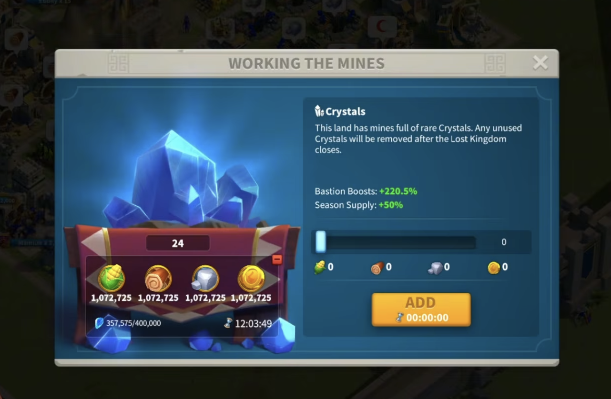
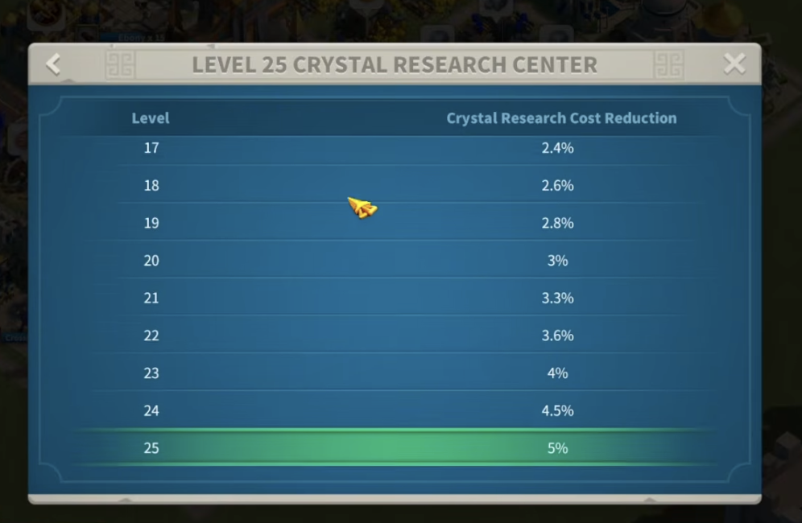
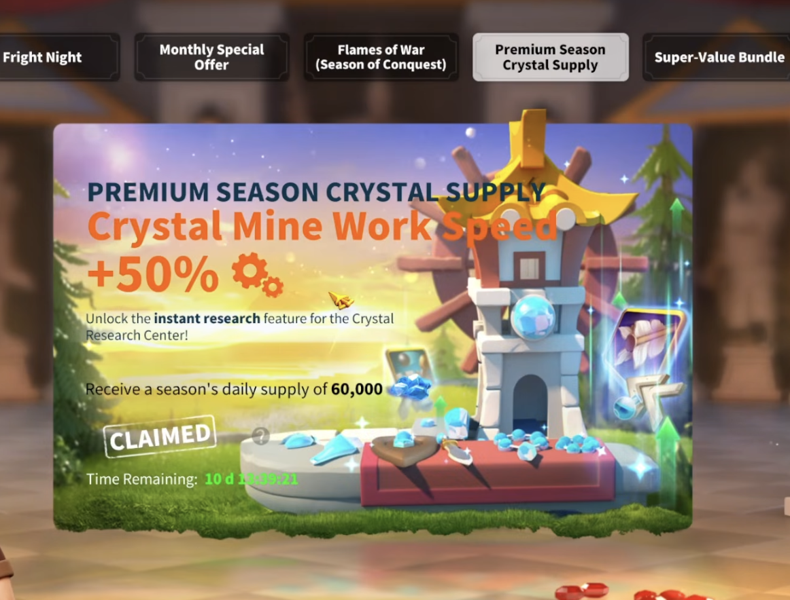
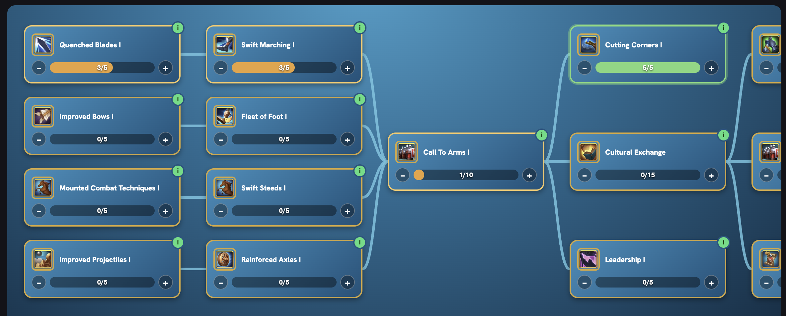
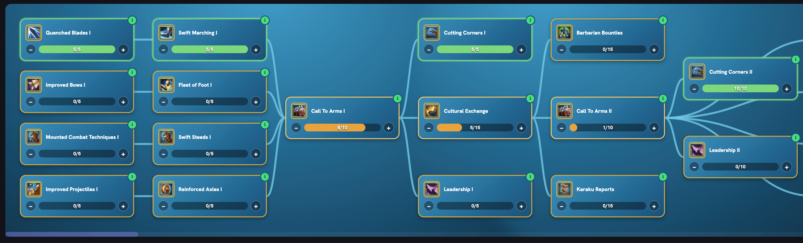
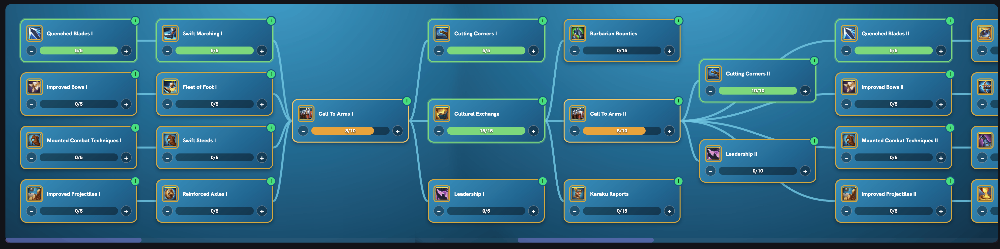
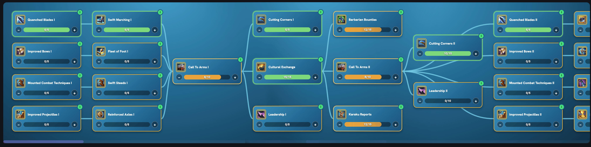
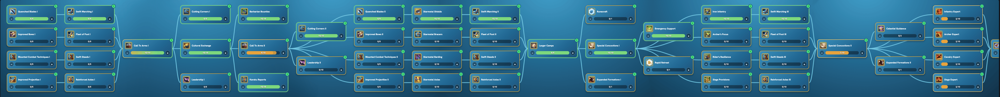

For Free-to-Play (F2P) and Low-Spending Players
What is Crystal Technology?
Crystal Technology is a special research system available during KvK, starting from KvK 4.
It provides powerful bonuses to your marches, helping you perform better in battle.
Unlike regular Academy technology, Crystal Technology is temporary. It resets at the end of every KvK, along with its buildings and bonuses.
This means you will need to develop it again when your next KvK begins.
Crystal Technology Buildings
At the beginning of each KvK, two new buildings become available in your city.
Crystal Mine
The Crystal Mine produces crystals over time.
Its production speed depends on the building's level. The higher its level, the more crystals it produces.
You can increase production even further by leveling up Bastions on the KvK map.
The sooner you upgrade your Crystal Mine, the more crystals you can earn throughout KvK.

Crystal Research Center
The Crystal Research Center allows you to research Crystal Technology.
These technologies provide bonuses to your marches, reduce certain costs, and help you earn more crystals.
Upgrading the Research Center unlocks more technologies and reduces the number of crystals needed for research.

How to Get Crystals
Crystals are the main currency used to upgrade your Crystal Mine, Crystal Research Center, and Crystal Technology.
There are several ways to earn them:
- Crystal Mine production
- Killing barbarians
- Defeating barbarian forts
- Completing Bastion quests
- Completing the Trial of Kau Karuak
- KvK events and rewards
For F2P and low-spending players, earning as many crystals as possible is very important.
This is why we will focus first on increasing crystal income and reducing research costs, before investing heavily in combat technology.
Important for Low Spenders: Crystal Pass
If you are a low spender, the Premium Season Crystal Supply (Crystal Pass) is one of the best purchases you can make during KvK.
It costs approximately $5 and provides:
- 60,000 crystals every day
- 50% increased Crystal Mine production speed
If you plan to buy it, try to purchase it at the beginning of KvK.
The earlier you activate it, the longer you can benefit from the increased crystal production.

Crystal Technology Upgrade Guide
Follow these steps in order to make the most of your crystals.
Step 1 – Upgrade Your Crystal Mine to Level 25
Target: Level 25 (Maximum)
As soon as your Crystal Mine becomes available, your first priority is to upgrade it to level 25.
Total cost: Approximately 1.8 million crystals.
At level 25, your Crystal Mine reaches its maximum base production rate.
Because the mine produces crystals continuously, upgrading it early will help you earn more crystals throughout KvK.
Remember that leveling up Bastions can increase its production even further.
Step 2 – Upgrade Your Crystal Research Center
Target: Level 21 minimum, preferably Level 24
Your next priority is the Crystal Research Center.
The higher its level, the more technologies you can unlock. It also reduces the crystal cost of research.
Recommended targets:
| Level | Approximate total crystals |
|---|---|
| 21 | 900,000 |
| 24 | 1,500,000 |
Level 21 is our minimum target. If you have enough crystals, aim for level 24.
This will help you save crystals on the many technologies you will research during KvK.
Step 3 – Max Out Cutting Corners I
Your next goal is to research Cutting Corners I to level 5.
This technology reduces the number of crystals needed for research.
The sooner you unlock it, the more crystals you will save throughout KvK.
Important: Research only the minimum requirements needed to reach Cutting Corners I. Avoid spending crystals on unnecessary technologies for now.

Step 4 – Max Out Cutting Corners II
After completing Cutting Corners I, your next priority is Cutting Corners II.
This technology further reduces the number of crystals needed for research.
Just like before, focus only on the technologies required to unlock it.
Avoid spending crystals on unrelated technologies for now.

Step 5 – Max Out Cultural Exchange
Target: Level 15/15
Cultural Exchange is one of the most important economic technologies.
It increases the Favor you earn from Bastion quests, helping you level up Bastions faster.
Higher Bastion levels provide larger production bonuses to your Crystal Mine.
This makes Cultural Exchange especially valuable when researched early, as you will benefit from the extra crystal production throughout KvK.

Step 6 – Upgrade Barbarian Bounties and Karaku Reports
These two technologies improve your progress through PvE activities.
Barbarian Bounties helps you earn more crystals from killing barbarians.
Karaku Reports provides bonuses related to the Trial of Kau Karuak.
Both technologies are important because they improve your PvE progress and help you unlock technologies further down the research tree.
Try to research them early so you can benefit from their bonuses throughout KvK.
Optional: Prepare for Zone 5 Fighting
If you need additional combat bonuses before fighting begins in Zone 5, you can take a different approach.
Instead of immediately upgrading both technologies to level 15, stop at level 12 and begin researching the combat technologies shown in this guide.
This allows you to strengthen your marches earlier, rather than spending all your crystals on economic technologies.
You can return to these upgrades later.

Step 7 – Research Special Concoctions I and II
Target: Unlock both technologies and upgrade them as much as possible
Your next major goal is to reach Special Concoctions I and II.
These technologies reduce the resources needed to heal your wounded troops.
This is especially useful during KvK, when frequent fighting can consume large amounts of food, wood, stone, and gold.
The higher you upgrade these technologies, the more resources you can save when healing troops.
Focus on One Troop Type
The most efficient way to reach these technologies is to focus your research on one troop type.
For example, if your main marches use infantry, prioritize the infantry technologies required to advance.
Avoid upgrading every troop type at the same time, especially in the beginning.
Doing so will consume more crystals and delay your progress toward Special Concoctions.
You can always return to the other troop types later.

What Should You Research Next?
Once you have reached this point, the main part of our recommended research path is complete.
From here, you have more freedom to choose how to spend your crystals.
You can continue improving your main troop type to make your marches stronger.
Alternatively, you can go back and research technologies for other troop types.
Your choice should depend on your remaining crystals, your marches, and how you plan to fight during the rest of KvK.